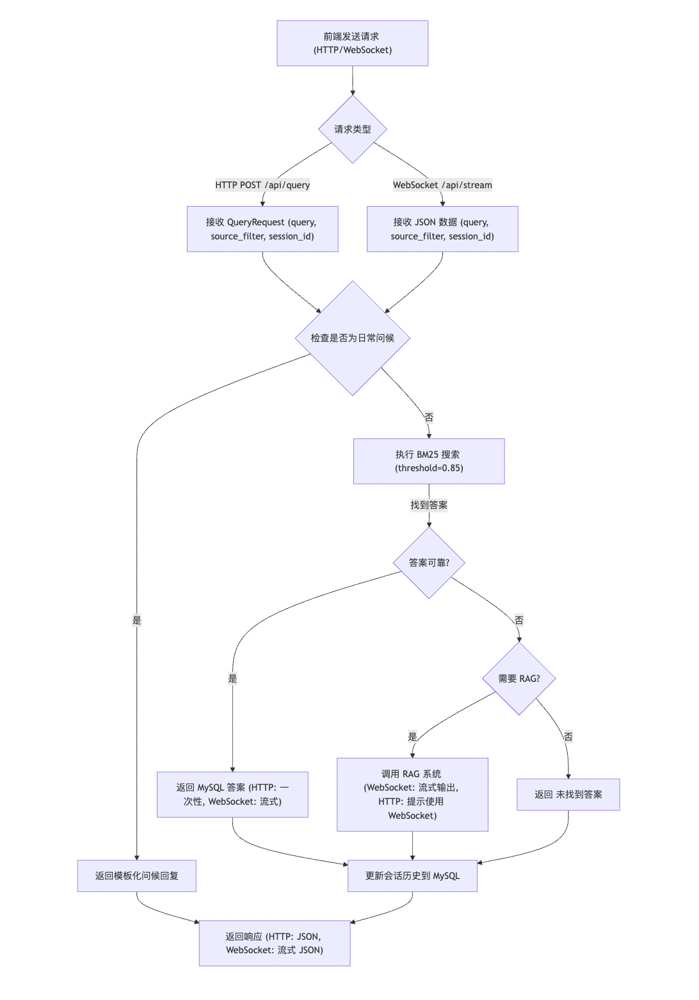

工程实践提示：示例中的模型地址、数据库账号和密钥均应通过环境变量或独立配置文件注入；部署前还需补充权限控制、输入校验、超时重试、日志脱敏、来源引用与离线评估。
学习目标：
- 理解如何基于 FastAPI 构建高效的问答系统 API 接口。
- 掌握 WebSocket 流式输出和 HTTP 接口的实现，优化用户交互体验。
- 学习前后端交互、前端静态文件服务以及日常问候处理的集成。
app.py 是对 new_main.py 的进一步优化，基于 FastAPI 框架构建了 RESTful API 和 WebSocket 接口，集成了 MySQL FAQ 和 RAG 系统，支持流式输出、对话历史管理和日常问候处理。同时，通过静态文件服务支持前端页面交互，适用于教育场景下的实时问答系统。
1 查询流程图
以下是基于 FastAPI 的问答系统查询流程图，展示从前端请求到后端响应的处理逻辑。

2 流程说明
-
请求接收：前端通过 HTTP POST (
/api/query) 或 WebSocket (/api/stream) 发送查询请求，包含查询内容 (query)、学科过滤 (source_filter) 和会话 ID (session_id)。 -
日常问候处理：检查查询是否为日常问候（如“你好”），若匹配则返回模板化回复。
-
BM25 搜索：使用 BM25 算法搜索 MySQL 知识库，设置相似度阈值 0.85。
-
答案判断:
- 若找到可靠答案（相似度 > 0.85），通过 HTTP 一次性返回或 WebSocket 流式返回。
- 若无可靠答案且需要 RAG，HTTP 接口提示使用 WebSocket，WebSocket 接口流式返回 RAG 答案。
- 若无需 RAG，返回“未找到答案”。
-
历史更新：将查询和答案存入 MySQL 的
conversations表，保留最近 5 轮对话。 -
响应输出：HTTP 返回 JSON 格式响应，WebSocket 流式发送 JSON 数据（包含
start、token、end或error类型）。
3 代码介绍
以下是 app.py 的完整代码，包含逐行注释，详细解析功能与实现逻辑。
3.1 导入必备的工具包
# 导入 FastAPI 相关模块，用于构建 API 和 WebSocket from fastapi import FastAPI, WebSocket, HTTPException, Query, Depends # 导入 FastAPI 响应类型，用于流式响应和文件服务 from fastapi.responses import StreamingResponse, FileResponse # 导入 CORS 中间件，支持跨域请求 from fastapi.middleware.cors import CORSMiddleware # 导入静态文件服务模块 from fastapi.staticfiles import StaticFiles # 导入 WebSocket 断开异常 from starlette.websockets import WebSocketDisconnect # 导入系统操作模块，用于文件目录管理 import os # 导入 Pydantic 模型，用于请求验证 from pydantic import BaseModel # 导入异步事件循环模块 import asyncio # 导入 JSON 处理模块 import json # 导入 UUID 模块，生成唯一会话 ID import uuid # 导入类型注解模块 from typing import Optional, List, Dict, Any # 导入时间模块，记录处理时间 import time # 导入正则表达式模块，用于匹配日常问候 import re # 导入优化后的问答系统 from new_main import IntegratedQASystem
3.2 创建 FastAPI 应用并配置
- 创建 FastAPI 实例并配置 CORS 和静态文件服务。
- 功能：初始化 FastAPI 应用，允许跨域请求，挂载静态文件目录。
- 关键点：CORS 配置在生产环境中需限制域名，静态文件服务支持前端页面。
# 创建 FastAPI 应用实例，设置标题和描述
app = FastAPI(title="问答系统API", description="集成MySQL和RAG的智能问答系统")
# 配置 CORS 中间件，允许跨域请求
app.add_middleware(
CORSMiddleware,
allow_origins=["*"], # 允许所有来源（生产环境需限制）
allow_credentials=True, # 允许凭证
allow_methods=["*"], # 允许所有 HTTP 方法
allow_headers=["*"], # 允许所有头部
)
# 创建静态文件目录（如果不存在）
os.makedirs("static", exist_ok=True)
# 创建全局问答系统实例
qa_system = IntegratedQASystem()
3.3 定义日常问候模式
- 定义问候语正则匹配模式和回复。
- 功能：快速响应常见问候，提升用户体验。
- 关键点：使用正则表达式匹配，支持大小写无关匹配。
# 定义日常问候用语模式和回复
GREETING_PATTERNS = [
{
"pattern": r"^(你好|您好|hi|hello)", # 匹配问候语
"response": "你好！我是编程学习者，专注于为学生答疑解惑，很高兴为你服务！"
},
{
"pattern": r"^(你是谁|您是谁|你叫什么|你的名字|who are you)", # 匹配身份询问
"response": "我是编程学习者，你的智能学习助手，致力于提供 IT 教育相关的解答！"
},
{
"pattern": r"^(在吗|在不在|有人吗)", # 匹配在线确认
"response": "我在！我是编程学习者，随时为你解答问题！"
},
{
"pattern": r"^(干嘛呢|你在干嘛|做什么)", # 匹配状态询问
"response": "我正在待命，随时为你解答 IT 学习相关的问题！有什么我可以帮你的？"
}
]
3.4 定义请求和响应模型
- 使用 Pydantic 定义请求和响应数据结构。
- 功能：规范 API 输入和输出格式，确保数据验证。
- 关键点：支持可选字段，方便扩展。
# 定义查询请求模型 class QueryRequest(BaseModel): query: str # 查询内容，必填 source_filter: Optional[str] = None # 学科过滤，可选 session_id: Optional[str] = None # 会话 ID，可选 # 定义查询响应模型 class QueryResponse(BaseModel): answer: str # 答案内容 is_streaming: bool # 是否流式响应 session_id: str # 会话 ID processing_time: float # 处理时间
3.5 挂载静态文件服务
- 挂载静态文件目录并设置根路径。
- 功能：服务前端 HTML 文件，支持交互页面。
- 关键点：根路径重定向到
index.html。
# 挂载静态文件目录，服务前端文件
app.mount("/static", StaticFiles(directory="static"), name="static")
# 根路径重定向到 index.html
@app.get("/")
async def read_root():
return FileResponse("static/index.html")
3.6 创建新会话
- (
/api/create_session) 接口 - 功能：生成新的唯一会话 ID。
- 关键点：使用 UUID 确保唯一性。
# 创建新会话接口
@app.post("/api/create_session")
async def create_session():
session_id = str(uuid.uuid4()) # 生成唯一会话 ID
return {"session_id": session_id} # 返回会话 ID
3.7 查询历史消息
- (
/api/history/{session_id}) 接口 - 功能：获取指定会话的历史记录。
- 关键点：异常处理确保接口健壮性。
# 查询历史消息接口
@app.get("/api/history/{session_id}")
async def get_history(session_id: str):
try:
# 获取指定会话的历史记录
history = qa_system.get_session_history(session_id)
# 返回会话 ID 和历史记录
return {"session_id": session_id, "history": history}
except Exception as e:
# 抛出 HTTP 异常，包含错误信息
raise HTTPException(status_code=500, detail=f"获取历史记录失败: {str(e)}")
3.8 清除历史消息
- (
/api/history/{session_id}) 接口 - 功能：删除指定会话的所有历史记录。
- 关键点：返回操作状态，异常处理确保健壮性。
# 清除历史消息接口
@app.delete("/api/history/{session_id}")
async def clear_history(session_id: str):
# 清除指定会话的历史记录
success = qa_system.clear_session_history(session_id)
if success:
# 返回成功状态
return {"status": "success", "message": "历史记录已清除"}
else:
# 抛出 HTTP 异常
raise HTTPException(status_code=500, detail="清除历史记录失败")
3.9 检查日常问候
- (
check_greeting) 函数 - 功能：检查查询是否匹配日常问候，返回模板化回复。
- 关键点：正则匹配支持大小写无关，简化交互逻辑。
# 检查是否为日常问候用语并返回模板回复 def check_greeting(query: str) -> Optional[str]: query_text = query.strip() # 去除首尾空格 for pattern_info in GREETING_PATTERNS: # 使用正则匹配，忽略大小写 if re.match(pattern_info["pattern"], query_text, re.IGNORECASE): return pattern_info["response"] # 返回匹配的回复 return None # 无匹配返回 None
3.10 非流式查询接口
- (
/api/query) 接口 - 功能：处理非流式查询，支持 MySQL 答案和日常问候，提示使用 WebSocket 获取 RAG 流式答案。
- 关键点：返回 JSON 格式响应，记录处理时间。
# 非流式查询接口
@app.post("/api/query")
async def query(request: QueryRequest):
start_time = time.time() # 记录开始时间
# 使用请求中的 session_id 或生成新 ID
session_id = request.session_id or str(uuid.uuid4())
# 检查是否为日常问候
greeting_response = check_greeting(request.query)
if greeting_response:
# 返回问候回复
return {
"answer": greeting_response,
"is_streaming": False,
"session_id": session_id,
"processing_time": time.time() - start_time
}
# 执行 BM25 搜索
answer, need_rag = qa_system.bm25_search.search(request.query, threshold=0.85)
if need_rag:
# 需要 RAG，提示使用 WebSocket
return {
"answer": "请使用WebSocket接口获取流式响应",
"is_streaming": True,
"session_id": session_id,
"processing_time": time.time() - start_time
}
# 返回 MySQL 答案
return {
"answer": answer,
"is_streaming": False,
"session_id": session_id,
"processing_time": time.time() - start_time
}
3.11 流式查询 WebSocket 接口
- (
/api/stream) 接口 - 功能：通过 WebSocket 提供流式查询，支持 RAG 答案、日常问候和错误处理。
- 关键点：发送
start、token、end或error类型的 JSON 消息，异步处理确保实时性。
# 流式查询 WebSocket 接口
@app.websocket("/api/stream")
async def websocket_endpoint(websocket: WebSocket):
await websocket.accept() # 接受 WebSocket 连接
try:
while True:
# 接收客户端消息
data = await websocket.receive_text()
request_data = json.loads(data) # 解析 JSON 数据
# 获取查询参数
query = request_data.get("query")
source_filter = request_data.get("source_filter")
session_id = request_data.get("session_id", str(uuid.uuid4()))
start_time = time.time() # 记录开始时间
# 发送开始标志
if websocket.client_state == websocket.client_state.CONNECTED:
await websocket.send_json({
"type": "start",
"session_id": session_id
})
# 检查是否为日常问候
greeting_response = check_greeting(query)
if greeting_response:
if websocket.client_state == websocket.client_state.CONNECTED:
# 发送问候回复
await websocket.send_json({
"type": "token",
"token": greeting_response,
"session_id": session_id
})
# 发送结束标志
await websocket.send_json({
"type": "end",
"session_id": session_id,
"is_complete": True,
"processing_time": time.time() - start_time
})
break
# 调用问答系统，流式处理查询
collected_answer = ""
for token, is_complete in qa_system.query(query, source_filter=source_filter, session_id=session_id):
collected_answer += token # 累积答案
if is_complete and not collected_answer:
if websocket.client_state == websocket.client_state.CONNECTED:
# 发送结束标志
await websocket.send_json({
"type": "end",
"session_id": session_id,
"is_complete": True,
"processing_time": time.time() - start_time
})
break
if token and websocket.client_state == websocket.client_state.CONNECTED:
# 发送 token 数据
await websocket.send_json({
"type": "token",
"token": token,
"session_id": session_id
})
if is_complete:
if websocket.client_state == websocket.client_state.CONNECTED:
# 发送结束标志
await websocket.send_json({
"type": "end",
"session_id": session_id,
"is_complete": True,
"processing_time": time.time() - start_time
})
break
await asyncio.sleep(0.01) # 控制流式输出的速度
except WebSocketDisconnect as e:
# 记录 WebSocket 断开信息
print(f"WebSocket disconnected: code={e.code}, reason={e.reason}")
except Exception as e:
# 记录错误信息
print(f"WebSocket error: {str(e)}")
if websocket.client_state == websocket.client_state.CONNECTED:
# 发送错误消息
await websocket.send_json({
"type": "error",
"error": str(e)
})
finally:
try:
if websocket.client_state == websocket.client_state.CONNECTED:
# 关闭 WebSocket 连接
await websocket.close()
except Exception as e:
# 记录关闭连接时的错误
print(f"Error closing WebSocket: {str(e)}")
3.12 健康检查接口
- (
/health) 接口 - 功能：提供健康检查端点，确认服务状态。
- 关键点：简单可靠，适合监控系统可用性。
# 健康检查接口
@app.get("/health")
async def health_check():
return {"status": "healthy"} # 返回健康状态
3.13 获取学科类别
- (
/api/sources) 接口 - 功能：返回系统支持的学科类别。
- 关键点：便于前端动态展示过滤选项。
# 获取有效学科类别接口
@app.get("/api/sources")
async def get_sources():
return {"sources": qa_system.config.VALID_SOURCES} # 返回学科类别列表
3.14 启动 FastAPI 服务
- 主程序入口
- 功能：使用 Uvicorn 运行 FastAPI 应用。
- 关键点：配置主机和端口，支持生产环境部署。
# 主程序入口 if __name__ == "__main__": import uvicorn # 运行 FastAPI 应用，监听 0.0.0.0:8000 uvicorn.run("app:app", host="0.0.0.0", port=8000, reload=False)
章节总结
本章展示了基于 FastAPI 的 app.py，通过 RESTful API 和 WebSocket 接口实现了高效的问答系统。系统集成了 MySQL FAQ 和 RAG 的查询功能，支持流式输出、对话历史管理和日常问候处理，结合静态文件服务实现了前后端交互，配备健壮的错误处理和日志记录，适合教育场景下的实时问答需求。